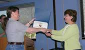
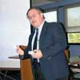
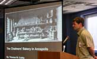
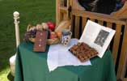
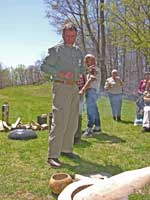
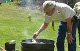
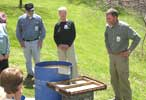
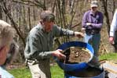
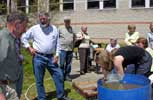
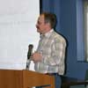

Archeology and the Search for Ancient Meals
Presented by the
Archeological Society of Maryland, Inc.
and the
Maryland Historical Trust
Office of Archeology
Crownsville, Maryland
| Welcome - Maureen Kavanaugh, Chief, Office of Archeology, MHT | |||
| Welcome - John Fiveash, President, ASM | |||
|  | CAT Award presentation by the CAT Chairman, Beth Ragan to Carol Cowherd | ||
| Introduction - Jim Gibb, Vice President, ASM | |||
The Richard E. Stearns Memorial LectureThe Richard E. Stearns Memorial Lecture is named in honor of Richard E Stearns (1902-1969), curator of the Department of Archeology at the Natural History Society of Maryland for more than 30 years. Mr. Stearns located numerous archeological sites in the Chesapeake area, and carefully documented his surface and excavated finds. He published numerous archeological articles and several monographs, and donated his collection to the Smithsonian Institution. A commercial artist by profession, he was nonetheless a pioneer in Maryland archeology, instrumental in recording much of Maryland prehistory. |
|||
|  | English to American: An Archeological Perspective on the Colonial Diet in the Chesapeake Henry M. Miller, Chief Archaeologist, Historic St. Mary’s
City Commission |
||
The Iris McGillivray Memorial LectureIris McGillivray was a founding member of the Archeological Society of Maryland, Inc., ably serving the Society for over thirty years as Secretary, President, Newsletter Editor, Field Session Registrar, and Membership Secretary. She is perhaps best known, loved, and respected for her organization of the annual Spring Symposium, first held in 1965, arranging all aspects of the day-long program. In 1991 Iris was presented with the Society's William B. Marye Award to honor her services to archeology in Maryland. |
|||
Archeobotany: Why we do it, How we do it, and What it tells us. Justine Woodward McKnight, Archeobotanical Consultant |
|||
|  | The Chalmers Bakery in Annapolis: Early 18th Century Remains at 99 Main Street Thomas C. Cuddy, URS Corporation |
||
Lunchtime Demonstrations |
|||
Lunch out on the patio was followed by demonstrations of primitive cooking techniques and operation of a flotaion tank. Dan Coates explained how to heat water using hot rocks while Jack Davis used similar rocks to provide a great cooking surface. Dan then demonstrated the flotation tank. Justine McKnight spent a few minutes in a familiar environment picking through the floated remains. |
 |  | |
|  |  | ||
|  |  | ||
|  | Which scarce a hungry Dog would lap: Alcohol Consumption in the Colonial Chesapeake Mike Lucas, M-NCPPC, Prince George’s County |
||
| Wealth, Status and
Meat Choice in the Late 19th Century Ed Otter, Ed Otter, Inc., Archaeological Consulting Dr. Otter discussed his extensive research into how households selected and prepared meat dishes in the late historic period. |
|||
| Proffered Cups: European
Wine and Colonial Gentility James G. Gibb, Gibb Archaeological Consulting Wine of various kinds and quality was commonly imbibed by people from all stations in Colonial life, but men of wealth and prestige often used wine to entertain and impress elite guests. Dr. Gibb discussed wine bottles and glasses from archeological sites, relating them to the gentlemanly art of proffering wine. |
|||